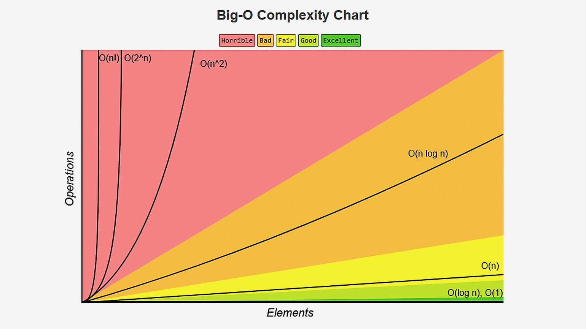
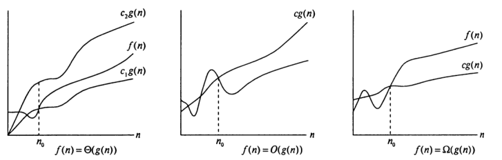

Различные алгоритмы, разработанные для решения одной и той же задачи,
часто очень сильно различаются по эффективности. Эти различия могут быть
намного значительнее тех, которые вызваны применением неодинакового аппа-
ратного и программного обеспечения. Поэтому для более точного анализа алгоритмов
используется О-символика.
О-символика, или асимптотическая запись, — это система символов, позволяющая оценить время
выполнения алгоритма,
устанавливая зависимость времени выполнения от увеличения объёма входных данных. Она также известна как
оценка сложности алгоритмов.
С помощью О-символики можно оценить функцию или алгоритм несколькими различными способами.
Например, можно оценить алгоритм исходя из нижней оценки, верхней оценки, тождественной оценки. Чаще всего
встречается анализ на основе верхней оценки.

Разница между O(n), Ω(n), и ϴ(n)
Нотация большого О позволяет выразить, что функция n «меньше
или равна» другой функции до определенного постоянного значения (константа с в определении) и
по мере того, как n стремится к бесконечности (условие «n ≥ n0» в определении).
Зачастую нотация большого O используется для характеристики
времени выполнения и использования памяти на основании некоего параметра n, который может различаться в конкретных ситуациях, однако,
как правило, зависит от целей анализа.
Пусть даны две функции f (n) и g(n) натурального аргумента n, значениями которых являются положительные действительные числа. Говорят, что f = O(g) (« f растёт не быстрее g»), если существует такая
констан
Существуют типы нотаций, которые позволяют проводить асимптотические сравнения других типов: Ω- и Θ- нотации,
которые асимптотически задают ограничения на функцию снизу или снизу и сверху одновременно.
f = Ω(g) ( f растёт не медленнее g, с точностью до константы) означает g = O(f );
f = Θ(g) ( f и g имеют одинаковый порядок роста) означает, что f = O(g) и g = O(f )

Благодаря О-символике мы можем заменить Зп” + 4п + 5 на 9(п^), пренебрегая остальными слагаемыми. Вот несколько общих правил такого рода
замен:
1. Постоянные множители можно опускать.
2. na растёт быстрее nb для а > Ь.
3. Любая экспонента растёт быстрее любого многочлена (полинома).
4. Любой полином растёт быстрее любого логарифма.
Примеры
O(n) — линейная сложность.
Такой сложностью обладает, например,
алгоритм поиска наибольшего элемента в не отсортированном
массиве. Нам придётся пройтись по всем n элементам массива,
чтобы понять, какой из них максимальный.
O(log n) — логарифмическая сложность.
Простейший пример — бинарный поиск. Если массив отсортирован,
мы можем проверить, есть ли в нём какое-то конкретное значение,
методом деления пополам. Проверим средний элемент, если он
больше искомого, то отбросим вторую половину массива — там его точно нет. Если же меньше, то наоборот — отбросим начальную половину. И так будем продолжать делить пополам, в итоге проверим log n элементов.
O(n2) — квадратичная сложность.
Такую сложность имеет, например, алгоритм сортировки
вставками. В канонической реализации он представляет
из себя два вложенных цикла: один, чтобы проходить
по всему массиву, а второй, чтобы находить место
очередному элементу в уже отсортированной части.
Таким образом, количество операций будет зависеть
от размера массива как n * n, т. е. n2.
Бывают и другие оценки по сложности, но все они основаны на том же принципе.
Также случается, что время работы алгоритма вообще не зависит от размера входных данных. Тогда сложность обозначают как O(1).
Например, для определения значения третьего элемента массива не нужно ни запоминать элементы, ни проходить по ним сколько-то раз.
Всегда нужно просто дождаться в потоке
входных данных третий элемент и это будет результатом, на вычисление которого для любого количества данных нужно одно и то же время.
Аналогично проводят оценку и по памяти, когда это важно. Однако алгоритмы могут использовать значительно больше памяти при
увеличении размера входных данных, чем другие, но зато работать быстрее. И наоборот. Это помогает выбирать оптимальные пути
решения задач исходя из текущих условий и требований.